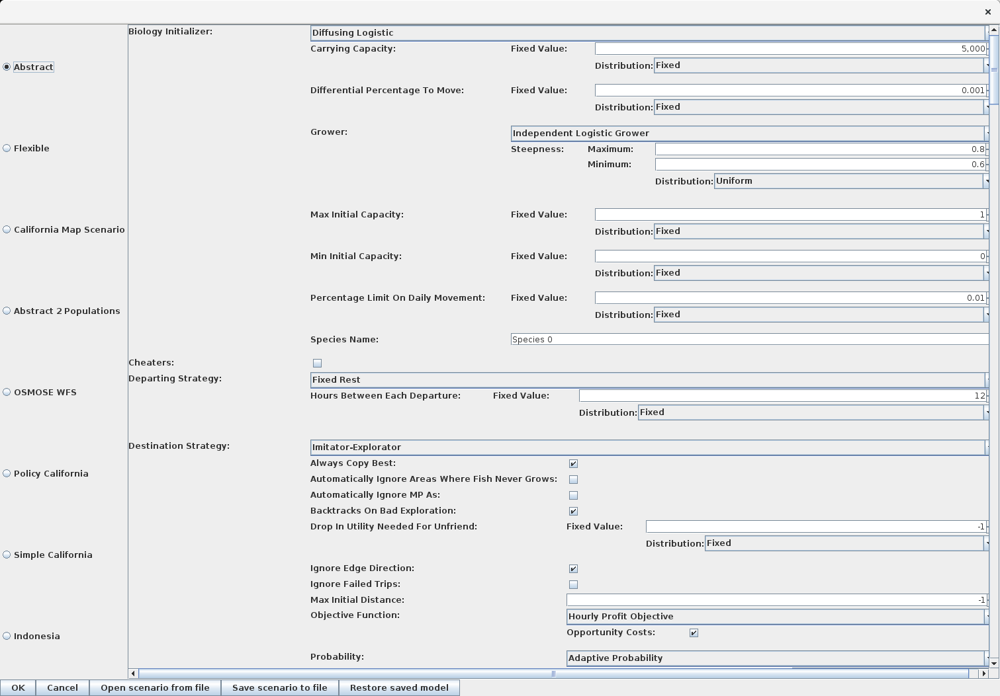

Chapter 3 Starting POSEIDON
POSEIDON is a gradle project which means (hopefully, anyway) that the library management and building are taken care of automatically.
On linux/mac you should be able to simply call:
in the POSEIDON directory to start the program.
On windows use
gradlew.bat runThe first time this is run, POSEIDON will download all the libraries it needs and build itself.
If everything went well you should see something like this:

Welcome to POSEIDON!